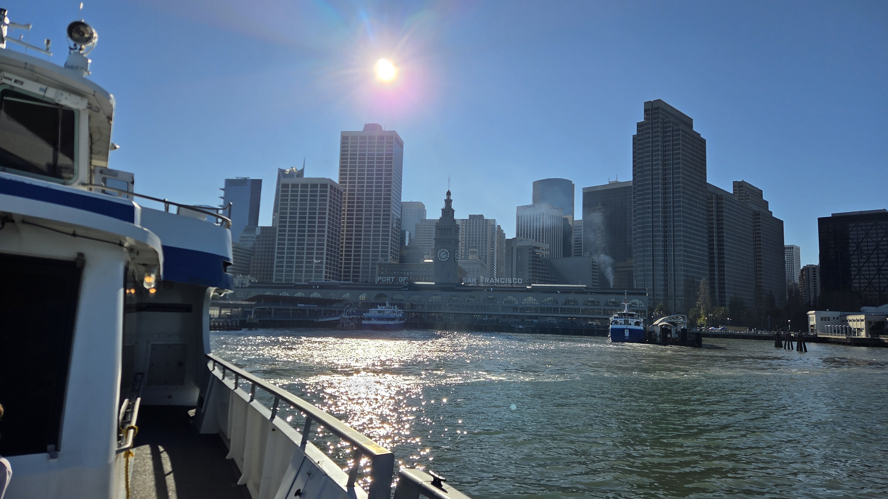
San Francisco
There’s so much to visit when you live in the South Bay that people often look at you askance when hearing you ventured up to San Francisco for the day. Nonetheless, let’s start by knocking out my top picks for the City by the Bay. Coming in at a surface area of 46.8 mi2 (121.51 km2), it’s surprising that suburbs like San Jose are nearly four times its size (181.4 mi2 or 469 km2) and three times its population (2 million residents for the home of the Sharks vs. 803,876 San Franciscans).
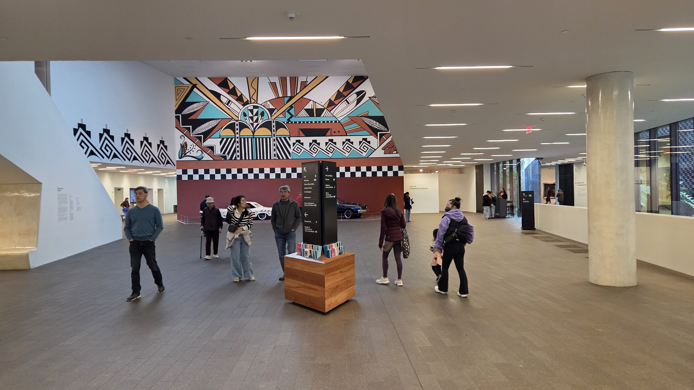
What San Francisco lacks in size, it certainly makes up for in adventure. The densely packed metropolis is home to more than 50 museums, 230 parks, and over 316 designated landmarks. If you’re coming by car, consider taking 49 Mile Drive, which will take you past City Hall, down windy Lombard Street, through Golden Gate Park, and amidst the narrow thoroughfares of America’s oldest Chinatown. You’ll also get plenty of views of Alcatraz, the Pacific, and the San Francisco Bay along the way.
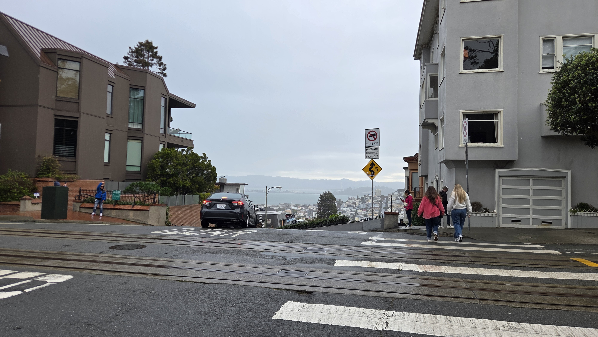
Rich’s Picks
It’s hard to narrow down a list that I have not even been able to cover in the years I’ve lived here (nearing four at the time of this writing), but I’ll do my best.
Right along the 49 Mile Drive is The Buena Vista, a diner and watering hole with its origins dating back to 1916—over 100 years of catering to the likes of Alan Shepherd (first American astronaut) and Fred Astaire*. Ironically, explains my barkeep, celebrities flocked here in days gone by to get away from gawking tourists. Today, it’s more a place where you’ll find the latter. Guidebook lore notwithstanding, this institution is the birthplace of the Irish Coffee in America in 1956. I could explain it here, but the story is better coming from those who know their way around a tall whiskey glass. They’ll tell it to you better than I ever could.
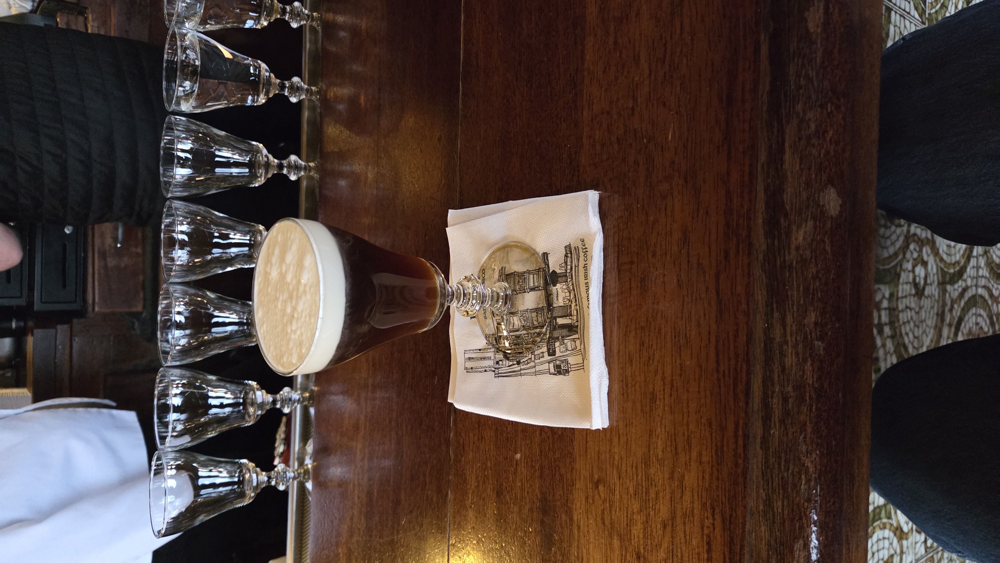
Next up is the San Francisco Cable Car. An engineering feat designed by a Brit in the late 19th century. To date, it is one of very few moving National Historic Landmarks in the United States! For a few dollars, you can experience an exhilarating ride up San Francisco’s steep hills (assuming you got in your 10,000 steps that day). Board on the driver’s side and hold on to the pole while standing if you want the best views (and breeze). You can even make it from The Buena Vista to the next stop on my list on the trolley via the Powell Hyde line! And back again. Just try and leave early to beat the crowds.
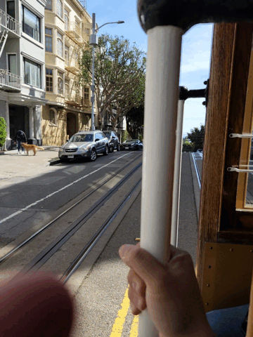
San Francisco’s Chinatown is the oldest in the United States, dating back to 1850. You can find all sorts of treasures, cultural phenomena, and, of course, good eats lining the 24-block neighborhood between Kearney and Stockton. I’ve rattled off a few below:
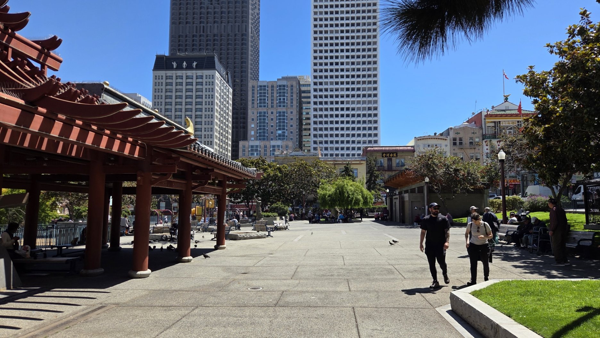
- Dragon’s Gate, a traditional Chinese arch marking the entrance on Grant and Bush
- The Golden Gate Fortune Cookie Factory, where your next piece of whimsical life advice is being written
- Portsmouth Square, prime real estate for attending Chinese street card game and board game matches between locals
- [Currently closed in Feb. 2026] The Chinese Historical Society of America, with exhibits on the history of Chinese immigration
- Shops filled to the brim with Chinese art, jade, furniture, and jewelry
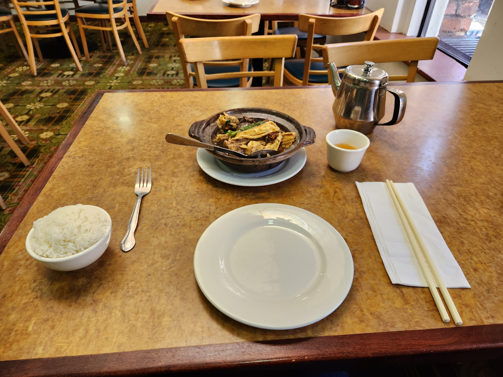
Some food picks in no particular order:
Capital Café for some Cantonese classics: Fried rice, Chinese broccoli in oyster sauce, Mongolian Beef, and Chow Fun, with a cup of hot Jasmine tea to top it off
AA Bakery for your typical Chinese pastries. My grandmother always used to go for dai daan tat, lao por peng, and some baked bao!
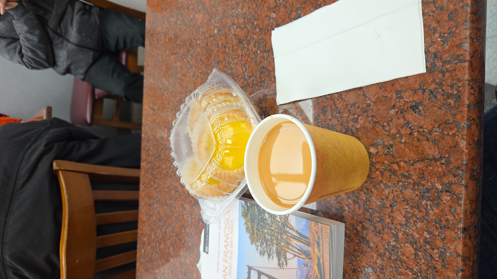
And for your after-meal
Next door to Chinatown is North Beach, San Francisco’s Little Italy. I’d recommend partaking in some true Italian espresso (or an espresso-based drink if a pure shot is too bitter). There are quite a few places serving some solid Joe, but props go to Cavalli Café, where you can top it off with a homemade cannoli (so long as you have a hollow leg!).
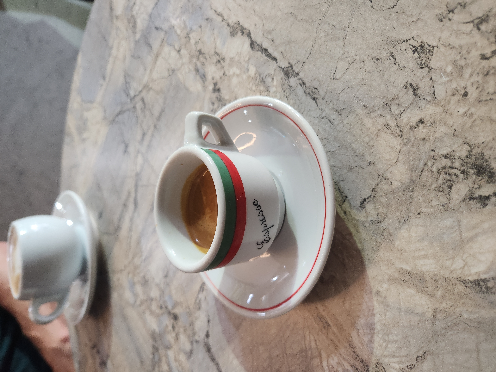
The final places I mention here are a bit easier to get to if you have a car. Taking the bus and/or BART might end up being a longer trip than leaving the state to the east… You’ve been warned! The quintessential San Francisco is of course the iconic Golden Gate Bridge. Staying on the 49 Mile Drive, you can drive up past the Marina, bearing right at the Palace of the Arts to run along the coast and up to the Presidio. Feel free to park and take the requisite photos (but don’t leave anything in your car).
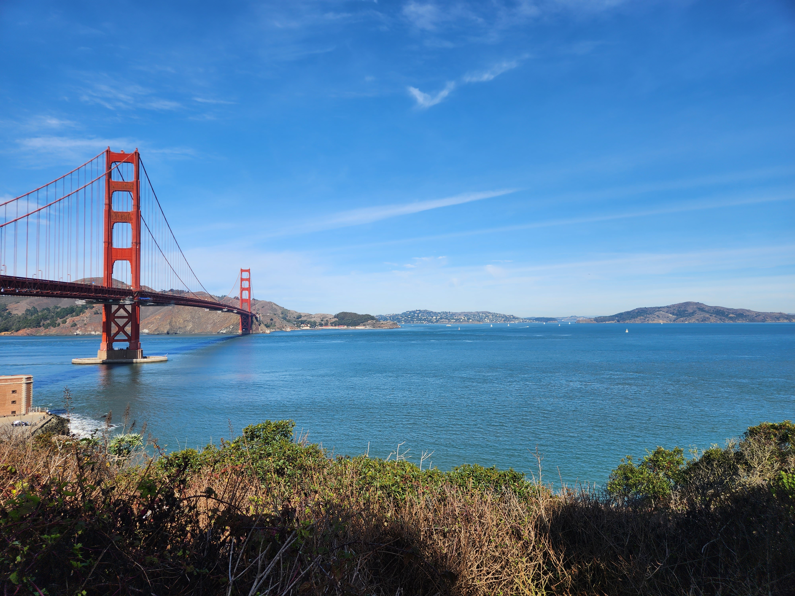
Onwards under the bridge, you can continue onwards to the west to Baker Beach, the Legion of Honor—if you have any cultural inclination—and then Lands End and Ocean Beach. Traveling southward, turn left into Golden Gate Park and perhaps stay awhile in the Japanese Tea Garden or the DeYoung Museum galleries and viewing area. Pass through Crossover Drive and take 19th Avenue all the way down to San Francisco State University and back onto 280 for a relaxing drive home.
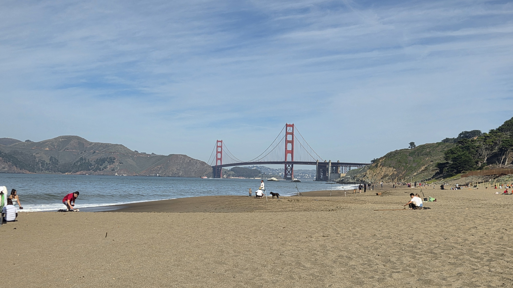
I am well aware that this is paraphrase and I have certainly missed reporting a number of places, to wit: Pier 39, the Coit Tower, the Mission, and many, many more! Perhaps they will make an appearance in a follow-up! I’ll let you tell me if you want more. Until next time, keep it cool, California.
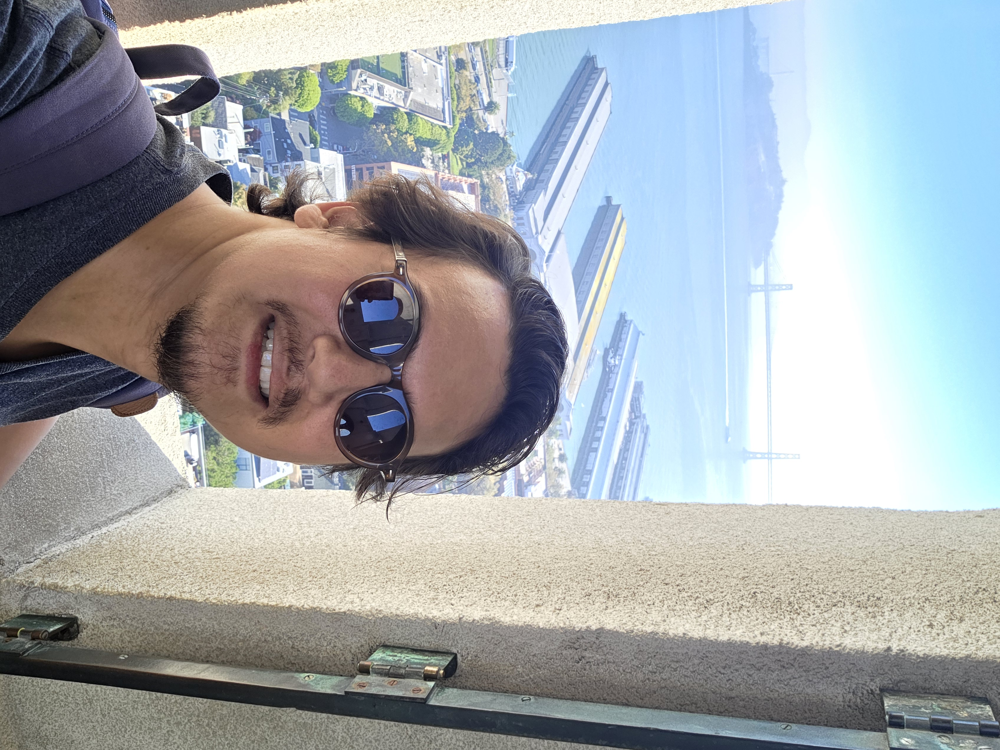
* Note that this article was not written by ChatGPT. Far from it. I am actually a translator and the em-dash has existed for far longer than chatbots. I seriously doubt that the word “thoroughfare” would have been generated by a large language model.
Looking for my professional site?
Or maybe the rest of The Break Room
Leave a Comment